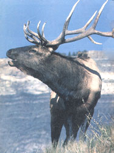
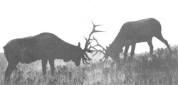
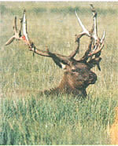

Monarch Of The West Wapiti
Getting to know our most regal ungulate, including history, habits and habitat of this type of elk.
By David Petersen
September/October 1986
Getting to know our most regal ungulate.
From my mountaintop cabin's door, it's maybe 1,000 yards across a little river valley to the patchwork of verdant meadows and chalk white aspen groves that make up Old Rube's summertime stamping grounds. Where he disappears to during winter I can only guess. Perhaps he wanders the 15 miles and 1,500 vertical feet down out of the high country to the easier pickings along the sheltered bottoms of the river, as do so many others of his kind. Or maybe Old Rube simply holes up somewhere back in the dark pine and fir forests that gird his summertime meadows and groves.
I call the old bull elk Rube because of the sleek rubescence of his summertime coat. There are other elk to spy on (through 7X binoculars) as they feed at the cool edges of day in those meadows over yonder-sometimes as many as a dozen cows, calves, and spike bulls. But the big red harem master is far and away the most striking; against the distance-darkened green of the meadows, Old Rube shines under the morning sun like a rich red jewel in an Ethiope's ear.
This big bull - just one of many hereabouts - is a prime example of why the elkor wapiti (from an Algonquian word meaning "white rump") - has been called "the monarch of the West." The moose is larger, the grizzly bear more powerful, the cougar more mysterious, and the whitetail more graceful. But the bull wapiti, with his proud posture, trumpeted call to arms, and rich, tricolored pelage, is certainly the most regal of North America's great wild creatures. And his crowning glory is a magnificent rack of antlers.
In fact, among elk aficionados, a bull's degree of royalty is determined by the splendor of his crown: A male carrying six tines on each main antler beam is a royal, seven points rate imperial status, while those rare few potentates who wear eight or more tines per beam are honored as monarchs. Exactly where on that scale Old Rube falls I really can't say . . . the distance is too great and my binoculars too small to allow for an accurate point count. But I've seen enough bull elk, and enough of Old Rube, to be certain that he's royalty. Possibly imperial.
Elk evolved as a distinct species within the deer family (Cervidae) in Asia, then spread westward to Europe as the red deer (stag) and eastward to North America via the Bering-Chukchi platform over the tens of thousands of years it was exposed by lowered sea levels during the Illinoian and Wisconsin glacial stages - beginning possibly as long ago as 120,000 years. While the North American wapiti was long classified as Cervus canadensis, a species distinct from the smaller and more deep-voiced European red deer, most wildlife taxonomists now lump the two together as C. elaphus.
Before the coming of Europeans, elk were the most widely distributed members of the deer family in North America, with an estimated 10 million wapiti roaming the continent - from Canada south as far as Durango and Hidalgo states in Mexico, west coast practically to east. In fact, wapiti once ranged over most of the lower 48 states. By 1922, though, elk had been so ravaged by unregulated hunting and their habitat so diminished by a westering human population (with the attendant cattle and sheep) that the number of wapiti in North America had sunk to a low of some 90,000 animals.
Yellowstone National Park proved to be the elk's saving space in the lower 48 (as it was for the bison). There, on 3,458 square miles of prime big-game habitat, safe from market hunters, real estate developers, and other human predators, elk continued to thrive. Wapiti from the burgeoning Yellowstone herd have since been sown round the continent until - according to the latest estimates of the Rocky Mountain Elk Foundation - North America now supports some 700,000 elk, with 650,000 of that total residing in the lower 48 states. This is the greatest number in this century (and occasionally too many for some ranges with limited carrying capacities, such as the Jackson Hole, Wyoming, wintering grounds of the southern Yellowstone herd.)
Today there are thriving wapiti populations in five Canadian provinces, along the Pacific coast from northern California up through British Columbia, on Afognak and Raspberry islands in Alaska, in the seven Rocky Mountain states, and in the Dakotas - as well as smaller herds on wildlife preserves in Nebraska, Oklahoma, Texas, Arkansas, Minnesota, Michigan, the Virginias, Pennsylvania, Florida, and Coahuila state, Mexico.
The primary North American elk species, Cervus elaphus, comprises four living subspecies, including the Rocky Mountain, Manitoban, Roosevelt, and Tule races. (Unfortunately, two other subspecies - Merriam and Eastern - are recently extinct.)
The Rocky Mountain elk ( C. e. nelsoni ) is native to the area from which it takes its name and is the most widespread of the four groups. A mature Rocky Mountain bull such as Old Rube might go 95 inches nose to rump, stand to around 55 inches at the shoulders, and weigh 700 to 800 pounds or more on the hoof. (While a few Rocky Mountain bulls in the half-ton class may still exist, they're about as scarce as fur on a fish.) Mature Rocky Mountain cows tickle the scales at around 500 to 600 pounds.
Manitoban elk, native to Canada's Manitoba and Saskatchewan provinces, carry somewhat smaller antlers, weigh a bit more, and are slightly darker in color than their Rocky Mountain cousins. There are fewer than 10,000 of this race in existence.
The Roosevelt elk of our northern Pacific coast is the largest of the four North American races, with adults averaging a good hundred pounds heavier than their Rocky Mountain brethren. (A Roosevelt herd transplanted in 1927 to Alaska's Afognak Island - near Kodiak - has produced bulls in the 1,200-pound range.) Strangely, the big Roosevelt's antlers are smaller than those of the Rocky Mountain subspecies, though they may carry more points.
An estimated 1,300 to 1,500 Tule elk survive today in pockets of habitat in central and northern California. Sometimes called the dwarf elk, the Tule is the smallest of the four North American species, with bulls averaging 550 pounds, cows just over 400.
No matter the species, the most striking physical feature of the wapiti is the treelike headgear worn by the bulls; even yearling males usually manage to sprout single-beam spikes averaging 16 inches in length. But elk antlers generally don't reach their full splendor until the fifth growth cycle, by which time most bulls sport racks with six tines per side on beams four feet and more in length. Although a bull will often survive well into his teens, his antlers will attain maximum size by around ten years of age.
Records? In his Journal of a Trapper 1834-1843, Osborne Russell reports that, while encamped on a branch of the Gallatin River in "Yellow Stone" country, his party of mountain men "killed the fattest Elk I ever saw. It was a large Buck the fat on his rump measured seven inches thick he had 14 spikes or branches on the left horn and 12 on the right."
Unbelievable? Perhaps. As a class, mountain men were renowned stretchers of the truth. Nonetheless, Osborne Russell later became one of the first sworn judges in Oregon Territory and was lauded as "a mature man of high character and good works." I believe him. Additionally, Dr. Phillip Wright - professor emeritus of zoology at the University of Montana and chairman of the records committee for the Boone and Crockett Club (the largest of the two U.S. organizations that score and rank big game trophies) - told me that he has no trouble accepting Russell's report of a 14 X 12 monarch in Yellowstone 150 years ago.
The current Boone and Crockett record for typical Rocky Mountain elk antler tines is 10 X 9. (I specify typical because, due to freak genetic factors or antler injury during growth, some cervids carry atypical racks having large numbers of small, somewhat deformed points.) The wapiti rack considered by the Boone and Crockett Club to be the overall grandest in existence is a "mere" 8 X 7 typical, taken by a meat hunter away back in 1899 near Crested Butte, Colorado. The right beam is 55-5/8 inches long, the left goes 59-5/8 inches, and the tip-to-tip spread is 45-1/2 inches.
Imagine hauling those dimensions through jungles of aspen and lodgepole pine at a dead run on a moonless night! No wonder elk instinctively hold their heads high when on the move - to position their antlers along their backs and minimize the amount of forest that gets clear-cut as they go.
Bull elk wear some form of antlers practically year-round. The cycle begins (or ends, depending on your view of such chicken-egg quandaries) in March with the casting (shedding) of the previous season's crown. When the old antlers are ready to fall, any impact or sudden movement of the head can cause the heavy beams to drop. Only rarely will both sides detach simultaneously, a situation that leaves the half-cast bull with a lopsided outlook on life - a problem he may attempt to remedy by spearing the tip of the surviving antler into the ground and twisting his neck until the offending appendage pops off.
Old Rube might weigh 800 pounds (or more) on the hoof.
Buds of new growth appear on the pedicels (two permanent bumps on a cervid's skull from which antlers sprout) soon after a bull casts his previous season's crown. The fresh antlers grow rapidly through the summer and attain full size by late July or early August. After rubbing off the skinlike velvet and polishing his new headgear to an ivory shine, the monarch of the West is ready to face the many challenges of the autumn rut.
It's a chill, late-August evening in the high country. I'm out front splitting firewood when an eerie melody comes drifting across the valley, its notes so sharp and high they cut right through the rhythmic knocking of my axe. I recognize the tune immediately and smile; there will be no more work this evening. I lean my axe up against the little pile of aspen splits, wipe the sweat from my face, and wait.
After a while the serenade is repeated - a throat-clearing tremolo stretching into a taut alto, wavering up to a soprano vibrato - sustained - then falling of rapidly in pitch and volume like a cry snatched away by the wind; the finale is a triad of sharp grunts.
No mistaking that voice. It's Old Rube heralding the coming of autumn. Again I smile, knowing that for the next several weeks the resonant bugling of Old Rube and other neighborhood bulls will fire my imagination, invade my dreams, revitalize my spirit.
I am drawn to that wild sound as a homesick sailor to a beckoning Siren's song. Autumn after autumn, morning after morning, I eagerly abandon the warmth of my bed to plunge into the dark chill depths of the surrounding forest . . . straining to make my movements as imperceptible as the passage of time, as quiet as meditation; my senses marking each flit of wing, every rustle of leaf; dampened nostrils testing chill morning breezes for the musky barnyard odor that tells me I'm near a bull elk in rut.
Rube is, as Emerson would have it, a far better animal than I.
I love this cat-and-mouse game, having at various times slipped up to within breathholding distance of numerous coyotes, bears, deer, and elk. But I've never been quite good enough to throw a successful sneak on Old Rube. He is, as Emerson would have it, a far better animal than I. I've stood entranced while he whistled, grunted, barked, and bugled just over the next rise. I've followed his minutes-fresh spoor and found his stillwarm day beds. But I have never met Old Rube up close.
Just as well, for the meeting would kill the mystery.
During the six or so weeks of rut each fall, the bull elk is, well, the horniest of all large mammals. So overwhelming is the monarch's lust that it bloodies his eyes and swells his neck. So agitated is his mood that merely to round up a harem of a dozen or so cows and court each one during her brief estrus is not enough; the love-drunk bull requires additional outlets for his surging libido . . . innocent diversions such as antlering conifer saplings to toothpicks and wallowing in mud baths perfumed with his own urine.
Then, too, there's the tension of the challenge. Any bullish elk Casanova who has what it takes to collect a harem of cows must stand ready to prove that he also has what it takes to keep them. Younger bulls, lacking muscle and confidence enough to openly challenge a harem master, will sulk in the shadows awaiting a chance to spirit away some straying cow for a sneak-thief honeymoon. And mature bulls that consider themselves equal in power and charm to the herd master will hoof it in from miles around to challenge the king for his throne.
A bull elk Casanova must stand ready to maintain his harem.
But since it runs counter to preservation of the species for competitive males to kill and mutilate one another, most conflicts between rutting bulls are symbolic rather than physical - bugling contests, antler profiling, bluff charges, minimal-contact sparring, and the like. When physical violence does erupt, it can and sometimes does prove fatal to one or both contestants, but most often takes the theatrical form (as did the single battle of the bulls I've observed) of a barroom shoving match between two well-oiled good old boys, neither of whom really cares to have his nose bloodied.
By comparison, the ladies of the species suffer the rut with grace and dignity, spending their time - when not being herded about or romanced by the monarch of the moment-in normal elk fashion. Which is to say, grazing morning and evening on forbs and meadow grasses, relaxing in the shade to chew meditative cud through midday, and pretending to ignore the boys.
Wapiti prosper in the most pristine of natural surroundings.
An upshot of the rut is that many a lovespent herd bull enters winter malnourished and exhausted - liabilities that can prove fatal should the season prove harsh. Meanwhile, the cows are plump, rested - and pregnant.
The gestation period for elk is 8-1/2 months. Thus, having mated at the height of the rut in late September, a cow will come to term in early June. When her time arrives, the matron will wander away from the herd to select a nursery in thick cover. There, in stoic solitude, she will deliver her young-most often just a single calf.
The typical Rocky Mountain elk babe enters the world as a 30-to 40-pound bundle of white-spotted sorrel. A healthy calf will rise on wobbly legs within hours of its birth, and by the age of one week will be swift enough to elude most predators - at which time mother and calf will return to the herd, a grand wild species renewed.
Like brook trout, wapiti prosper best in the most pristine of natural surroundings - country that's high, cool, and lonesome. And just as the presence of a healthy population of "brookies" indicates a quality aquatic world, thriving herds of wapiti indicate a balanced land environment. But elk can be more than mere indicators of environmental quality: To me they are magical beings which, by their very presence, redefine the landscape. The meadow or glen where I spot elk or even just signs of their passing - a deep split print in the forest duff, a fallen antler, a bleached thigh bone, the compressed grass of a cud bed, a pile of black-green droppings - that place is forever transformed in my mind, sanctified.
I am blessed to live amidst some of nature's grandest beasts and battlements (though I pay for this privilege in a great many ways). But it's not necessary to have an Old Rube grazing within sight of your doorstep to be spiritually renewed by the knowledge that, even in these crowded and stressful times, creatures as magnificent as the wapiti are still out there, somewhere - most of them roaming public lands . . . the mountains, forests, and meadows owned by, and accessible to, all Americans.
The very morning of the cows plodded in, Old Rube pulled out.
Today, America's wapiti prosper . . . but tomorrow? James B. Ruch, director of the Colorado Wildlife Commission, recently pointed out three primary concerns for those of us interested in preserving elk and other large wildlife: habitat, habitat, and habitat. The message is there, clear and complete. As a growing human population with increasingly bloated material expectations places more and more stress on a rapidly decreasing acreage of unspoiled land, wildlife is bound to suffer. Including elk. Including Old Rube.
In fact, only part of Old Rube's turf over yonder across the valley is public land, a small green square of America's checkerboard commons. The rest belongs to a friend by the name of Helen, an 82-year-old rancher who was born and has lived her entire life on the land homesteaded by her parents in the 1800s. This summer Helen found it financially necessary to open the backpasture gates and allow her cattle to range out onto a wild tag-end of her ranch that normally goes ungrazed - except by Old Rube and his crew.
And so one bright July morning came the lowing beeves. Beeves to fatten in those rich meadows where Old Rube grazed away his summers and from which he trumpeted his unfettered autumnal lust . . . beeves to trample the delicate understory of Old Rube's midday aspen havens . . . beeves to foul the sparkling rills in which Old Rube quenched his bullish thirst.
Adequate habitat will produce wapiti to thrill future generations.
The very morning the cows plodded in, Old Rube pulled out. I haven't seen him since. Now, instead of the ivory antlers and distinctive white rump patches of wapiti, when I gaze across the valley through my binoculars I see only whitefaces, black Angus, and beefalo.
It would be easy, almost natural, to blame ranchers such as Helen for forcing more than 90% of all the lower 48's elk to bottle up on public land. But it's not quite that simple. I can't fault Helen for doing what she must in order to pull a modest living from her own deeded property. Not only is it her right as a landowner, but by so doing she is also helping Old Rube and his kind. How? By keeping a large chunk of prime wildlife habitat out of the hands of developers. One less in love with the land - and that would be just about anyone - would have sold out long ago, forced by the financial pressures weighing on small ranchers and farmers today to snap up the quick millions proffered by the ever-present real estate sharks eager to devour unspoiled acreage, extracting the wealth and leaving a stain of overpriced riverfront subdivisions.
So long as Helen lives, those parks and groves over yonder will remain undivided - superficially marred by cattle from time to time, perhaps, but capable of rapid selfhealing. Next spring, when this summer's beeves have long been converted to burger and the high-meadow flowers are again in bloom, Old Rube might even come back. In fact, so long as his kingdom survives - undivided, unbulldozed, undeveloped, and unpeopled - I'm certain that he will.
Long live the monarch of the West. Long live the guardians of his realm.
|
 The bugling of the bull elk during autumn rut is a magnificent sound ? from a soprano vibrato falling to sharp grunts. |
 When bull elk battle during rut, the combat is usually more symbolic that it is damaging. (ALAN CAREY) |
 In late July or August, the elk sheds his velvet? a skin-like coating of the antlers. (WAYNE LANKINEN) |
 Top: The cycle is renewed. (ALAN CAREY) Bottom: The Tule elk is the smallest of the elk species. (? WARDENE WEISSER/BRUCE COLEMAN, INC. ) |
|
|